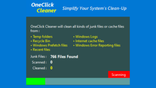

One-click junk file removal tool for Windows

A disk cleanup utility that can bulk delete unnecessary files from your Windows computer, including temporary and junk data that can slow down your system's performance.
OneClick Cleaner Overview
OneClick Cleaner is an effective tool that can clean up junk files in Windows with just one click.
OneClick Cleaner Features
These are the main features of OneClick Cleaner.
| function |
overview |
| Main Features |
Delete junk files in bulk |
| Function details |
Clean up junk files in Windows. |
Delete junk files in bulk
OneClick Cleaner is a utility that allows you to bulk remove unnecessary files from your Windows computer, including temporary and junk data that can slow down your system's performance .
OneClick Cleaner helps you clean junk files such as Temp folder, Windows Log files, Recycle Bin, Internet cache, Windows Prefetch files, Windows Error Reporting files, etc.
Clean with one click
OneClick Cleaner is easy to use. When you run it, it will start scanning your system, and once the scan is complete, it will start cleaning. Once the cleaning is complete, it will show you the number of files that have been removed.
OneClick Cleaner is a handy tool that helps you easily and efficiently remove unnecessary data to free up space and improve your computer's performance.
Free up disk space and optimize your PC
OneClick Cleaner is a handy application that can automatically scan critical areas in your Windows system to identify and remove temporary and unnecessary files that may hinder performance.
|